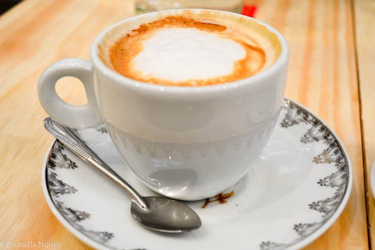

Uma mistura suave e delicada de cafés da Colômbia, Costa Rica e ilha de Java.
Uma mistura de leite fervido com um expresso curto e chocolate amargo.
Um expresso curto com leite fervido e espuma milenar.
Esta bebida é preparada com a mesma técnica chinesa inventada no fim do século XVII.
Uma bebida potente preparada com açucar orgânico do Himalaia e uma infusão das folhas da Camellia sinensis.
Ou faça seu pedido clicando aqui.
O café StarBugs nasceu em 2017 após um erro de código. Conheça a nossa missão.
Venha tomar um café conosco na Rua da Linhas, número 123 - Centro ou nos envie um e-mail para contato@starbugs.com.br
Ir para o topo.